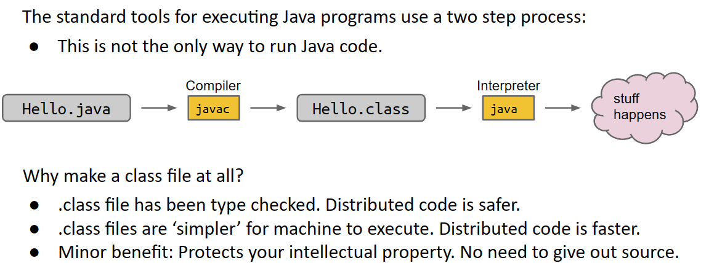
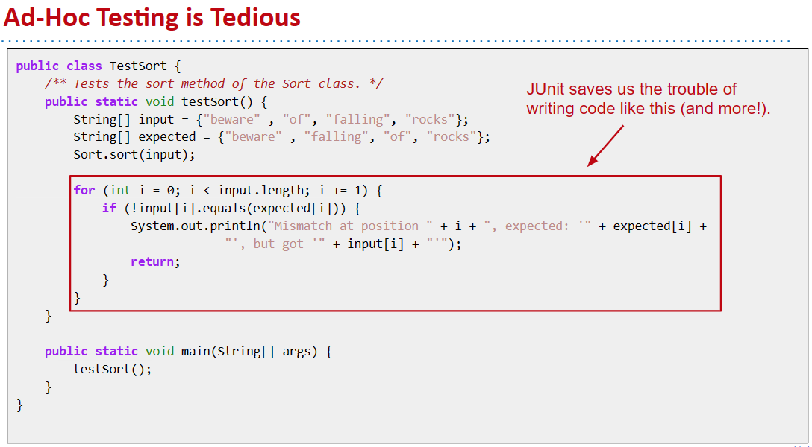
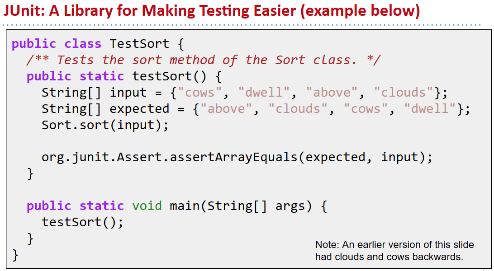
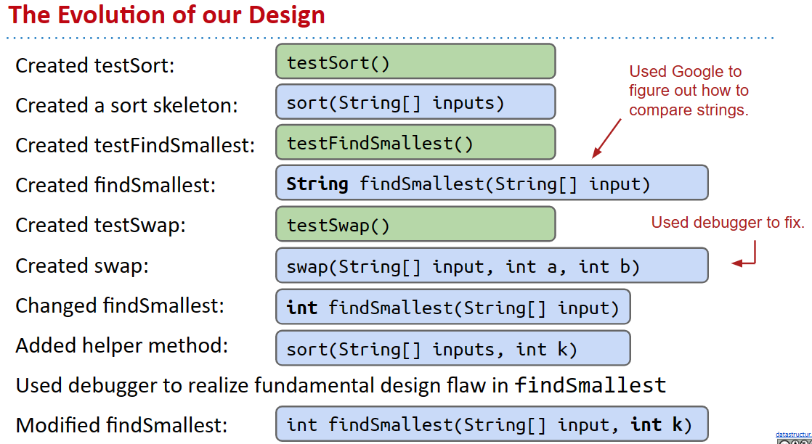
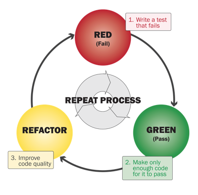
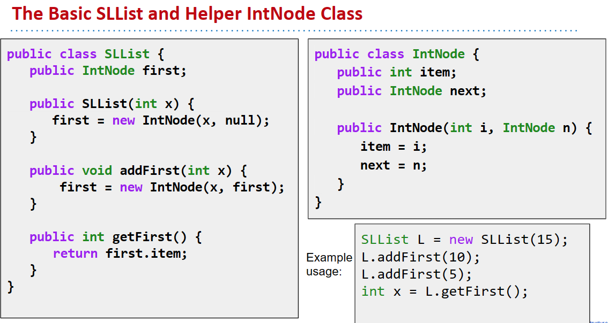
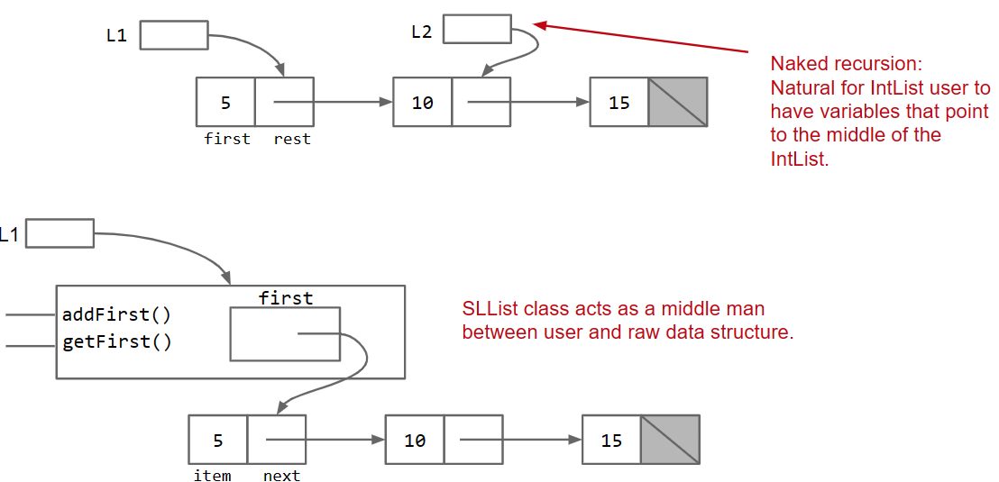
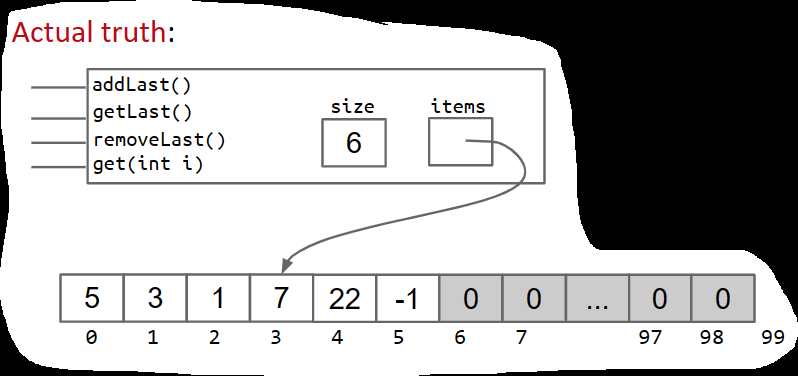

JAVA learning from CS61BIntroWhat is CS61B mainly aboutCompilationClasstestingAd Hoc Testing vs. JUnittip: sort:Steps to developing according to TDD:Sample Runner PseudocodePrimitive Types and Data structuresDeclaring a variable:Declaring a class:Declaration and Instantiation of ArraysIntListImprovements on IntList and Data safetyStep I:Rebranding and CullingStep II: BureaucracyStep III: Access ControlStep IV: Nested ClassesaddLast() and size()Step V: Fast size()Step VI: Representing the Empty ListDLList and Other TrialsStep VII: Modify addLast Step VIII: fancier sentinel nodesGeneric(泛型) ListArraysNaive AListResizing ArrayGeneric AlistsObscurantism in JavaInheritance, Implements & InterfaceOverload(重写) and Override(重写)Inheritance ImplementsInterfaceExtends, Casting, higher order functionsTips: Any subclasses construct must include the superclass constructer
Writing code that runs efficiently.
Writing code efficiently.

DOG:
Defining a Typical Class (Terminology)
xpublic class Dog {public int weightInPounds; // instance variable and can have many as it havepublic Dog(int startingWeight) { //ConstructorweightInPounds = startingWeight;} public void makeNoise() { //Non static methodif (weightInPounds < 10) { System.out.println("yipyipyip!"); } else if (weightInPounds < 30) { System.out.println("bark. bark."); } else { System.out.println("woof!"); } }}//roughly speaking: if the method needs to use “my instance variables”, the method must be non-static.public class DogLauncher {public static void main(String[] args) { Dog smallDog; new Dog(20); smallDog = new Dog(5); Dog hugeDog = new Dog(150); smallDog.makeNoise(); hugeDog.makeNoise();}}Arrays of Objects
To create an array of objects:
First use the new keyword to create the array.
Then use new again for each object that you want to put in the array.


New Syntax #1: org.junit.Assert.assertEquals(expected, actual);
Tests that expected equals actual. If not, program terminates with verbose message.
New Syntax #2 (just trust me):
Annotate each test with @org.junit.Test.
Change all test methods to non-static. Use a JUnit runner to run all tests and tabulate results. IntelliJ provides a default runner/renderer. OK to delete main. There are ways to run JUnit tests from command line. Not taught in our class. Rendered output is easier to read, no need to manually invoke tests!
New Syntax #3: To avoid this we’ll start every test file with: import org.junit.Test; import static org.junit.Assert.*; This will magically eliminate the need to type ‘org.junit’ or ‘org.junit.Assert’ (more after the midterm on what these imports really mean).
Without changing the signature of public static void sort(String[] a), how can we use recursion? What might the recursive call look like?
xxxxxxxxxx/** Destructively sorts x starting at index k */public static void sort(String[] x, int k) { ... sort(x, k + 1);}
Identify a new feature.
Write a unit test for that feature.
Run the test. It should fail. (RED)
Write code that passes test. (GREEN)
Optional: Refactor code to make it faster, cleaner, etc.

JUnit makes testing easy.
xxxxxxxxxxList<Method> L = getMethodsWithAnnotation(TestSort.class, org.junit.Test);int numTests = L.size();int numPassed = 0;for (Method m : L) { result r = m.execute(); if (r.passed == true) { numPassed += 1; } if (r.passed == false) { System.out.println(r.message); }}System.out.println(numPassed + “/” + numTests + “ passed!”);When you declare a variable of a certain type in Java: Your computer sets aside exactly enough bits to hold a thing of that type.
Example: Declaring an int sets aside a “box” of 32 bits.
Example: Declaring a double sets aside a box of 64 bits.
Java creates an internal table that maps each variable name to a location. Java does NOT write anything into the reserved boxes. For safety, Java will not let access a variable that is uninitialized.
The Golden Rule of Equals (GRoE)
Given variables y and x: y = x copies all the bits from x into y.
Reference Types
When we instantiate an Object (e.g. Dog, Walrus, Planet):
Java first allocates a box of bits for each instance variable of the class and fills them with a default value (e.g. 0, null).
The constructor then usually fills every such box with some other value.
Reference Types Obey the Golden Rule of Equals
Just as with primitive types, the equals sign copies the bits. In terms of our visual metaphor, we “copy” the arrow by making the arrow in the b box point at the same instance as a.
Arrays are also Objects. As we’ve seen, objects are (usually) instantiated using the new keyword.
xxxxxxxxxxint[] x = new int[]{0, 1, 2, 95, 4};Planet p = new Planet(0, 0, 0, 0, 0, “blah.png”);Note: Instantiated objects can be lost! If we were to reassign a to something else, we’d never be able to get the original Object back!
we need the following member variables and methods
xxxxxxxxxxpublic class IntList { public int first; public IntList rest; public IntList(int f, IntList r) { first = f; rest = r; } /** Return the size of this IntList. */ public int size() { if (rest == null) { return 1; } return 1 + this.rest.size(); ... }While functional, “naked” linked lists like the one above are hard to use. Users of this class are probably going to need to know references very well, and be able to think recursively. Let’s make our users’ lives easier.
xxxxxxxxxxpublic class IntNode { public int item; public IntNode next; public IntNode(int i, IntNode n) { item = i; next = n; }}// we will reintroduce functionality in the next partxxxxxxxxxxpublic class IntNode { public int item; public IntNode next; public IntNode(int i, IntNode n) { item = i; next = n; }}xxxxxxxxxxpublic class SLList{ public IntNode first; public SLList(int x) { first = new IntNode(x, null); } //...}
While functional, “naked” linked lists like the IntList class are hard to use.

We can prevent programmers from making such mistakes with the private keyword.
Hide implementation details from users of your class.
Car analogy:
Nested Classes are useful when a class doesn’t stand on its own and is obviously subordinate to another class.
Make the nested class private if other classes should never use the nested class. In my opinion, probably makes sense to make IntNode a nested private class. Hard to imagine other classes having a need to manipulate IntNodes.
Static Nested Classes
If the class don't need to call any variables outside , you can make it static
Static classes cannot access outer class’s instance variables or methods. Results in a minor savings of memory. See book for more details / exercise.
Create a private recursive helper method.
Have the public method call the private recursive helper method.
xxxxxxxxxxpublic class SLList { private int size(IntNode p) { if (p.next == null) { return 1; } return 1 + size(p.next); } public int size() { return size(first); }}Solution: Maintain a special size variable that caches the size of the list. Caching: putting aside data to speed up retrieval.
TANSTAAFL: There ain't no such thing as a free lunch. But spreading the work over each add call is a net win in almost any circumstance.
When the List is empty, we may find error when add last. So one solution is to add a judgement when addLast , though making the whole function look worse. So we come up with another idea：
Sentinel Nodes
Notes:
| Methods | Non-Obvious Improvements |
|---|---|
| addFirst(int x) | Rebranding: IntList → IntNode |
| getFirst | Bureaucracy: SLList |
| size | Access Control: public → private |
| addLast(int x) | Nested Class: Bringing IntNode into SLList |
| Caching: Saving size as an int | |
| Generalizing: Adding a sentinel node to allow representation of the empty list. |
On first thought, we tend to only add a .last, so w e can get the last fast , but then it becomes hard to remove.
We added .last. What other changes might we make so that remove is also fast? Add backwards links from every node. This yields a “doubly linked list” or DLList, as opposed to our earlier “singly linked list” or SLList.
While fast, adding .last and .prev introduces lots of special cases. To avoid these, either: Add an additional sentBack sentinel at the end of the list. Make your linked list circular (highly recommended for project 1), with a single sentinel in the middle.
We might notice that our list only support Integers while we need to rewrite the whole class while we need other data types.
We’ll spend a lot more time with generics later, but here are the rules of thumb you’ll need for project 1:
In the .java file implementing your data structure, specify your “generic type” only once at the very top of the file.
In .java files that use your data structure, specify desired type once: Write out desired type during declaration.
Use the empty diamond operator <> during instantiation.When declaring or instantiating your data structure, use the reference type.
DLList<Double> s1 = new DLList<>(5.3); double x = 9.3 + 15.2;s1.insertFront(x);
Arrays consist of:
A fixed integer length (cannot change!) A sequence of N memory boxes where N=length, such that: All of the boxes hold the same type of value (and have same # of bits). The boxes are numbered 0 through length-1.
Like instances of classes: You get one reference when its created. If you reassign all variables containing that reference, you can never get the array back.
Unlike classes:
Do not have methods.
Arrays and Classes can both be used to organize a bunch of memory boxes.
xxxxxxxxxxpublic class AList { private int[] items; private int size; public AList() { items = new int[100]; size = 0; } public void addLast(int x) { items[size] = x; size += 1; } public int getLast() { return items[size - 1]; } public int get(int i) { return items[i]; } public int size() { return size; }}So how to remove Last?
When we removeLast(), which memory boxes need to change? To what?-
User’s mental model: {5, 3, 1, 7, 22, -1} → {5, 3, 1, 7, 22}

xxxxxxxxxxpublic int removeLast() { int returnItem = items[size - 1]; items[size - 1] = 0;//not necessary size -= 1; return returnItem;} When the array gets too full, e.g. addLast(11), just make a new array:
the improving should be all-around and considering its influence
works
xxxxxxxxxxpublic void addLast(int x) { if (size == items.length) { int[] a = new int[size + 1]; System.arraycopy(items, 0, a, 0, size); items = a; } items[size] = x; size += 1;}xxxxxxxxxxprivate void resize(int capacity) {int[] a = new int[capacity];System.arraycopy(items, 0, a, 0, size);items = a;}public void addLast(int x) {if (size == items.length) {resize(size + 1);}items[size] = x;size += 1;}
much better
but its to slow and occupy to many memory in total
Geometric resizing is much faster: Just how much better will have to wait.
like this:
xxxxxxxxxxpublic void addLast(int x) { if (size == items.length) { resize(size * RFACTOR); } items[size] = x; size += 1;}An AList should not only be efficient in time, but also efficient in space. Define the “usage ratio” R = size / items.length;
Typical solution: Half array size when R < 0.25.
More details in a few weeks.
xxxxxxxxxxpublic class AList<Glorp> { private Glorp[] items; private int size; public AList() { items = (Glorp []) new Object[8]; size = 0; } private void resize(int cap) { Glorp[] a = (Glorp []) new Object[cap]; System.arraycopy(items, 0, a, 0, size); items = a; } public Glorp get(int i) { return items[i]; }...null out unnecessary items
Unlike integer based ALists, we actually want to null out deleted items. Java only destroys unwanted objects when the last reference has been lost. Keeping references to unneeded objects is sometimes called loitering. Save memory. Don’t loiter.
We talk of “layers of abstraction” often in computer science. Related concept: obscurantism. The user of a class does not and should not know how it works. The Java language allows you to enforce this with ideas like private! A good programmer obscures details from themselves, even within a class. Example: addFirst and resize should be written totally independently. You should not be thinking about the details of one method while writing the other. Simply trust that the other works. Breaking programming tasks down into small pieces (especially functions) helps with this greatly! Through judicious use of testing, we can build confidence in these small pieces, as we’ll see in the next lecture.
Firstly, let's talk about override and override,
In Java, both override and overload are used to define a new behavior for a method. However, they have different meanings and use cases.
Override: When a subclass provides its own implementation for a method that is already present in its superclass, it is called method overriding. The new implementation of the methOverrideod in the subclass is said to override the implementation in the superclass. The signature of the overridden method must be the same as the method in the superclass, including the method name, return type, and parameter list.
Example:
xxxxxxxxxxclass Animal {public void makeSound() {System.out.println("Some animal sound");}}class Dog extends Animal {@Overridepublic void makeSound() {System.out.println("Bark");}}
In the above example, the Dog class overrides the makeSound() method of the Animal class to provide its own implementation.
Overload: When a class has multiple methods with the same name but different parameters, it is called method overloading. The methods must have the same name but different parameter lists. The return type of the method can be different, but it is not considered when overloading a method.
Example:
xxxxxxxxxxclass Calculator {public int add(int a, int b) {return a + b;}public int add(int a, int b, int c) {return a + b + c;}}
In the above example, the Calculator class has two methods with the same name add(), but with different parameter lists. This is an example of method overloading.
n 61b, we’ll always mark every overriding method with the @Override annotation.
Example: Mark AList.java’s overriding methods with @Override. The only effect of this tag is that the code won’t compile if it is not actually an overriding method.
In Java, inheritance and implements are two essential object-oriented programming (OOP) concepts that allow you to create new classes based on existing ones. They promote reuse of code and help you design a more organized and maintainable application.
Inheritance is a mechanism that enables one class to inherit properties (fields) and methods from another class. The class that is being inherited is called the superclass or parent class, and the class that inherits the superclass is called the subclass or derived class.
In Java, you use the extends keyword to establish an inheritance relationship between two classes.
Syntax:
xxxxxxxxxxclass Subclass extends Superclass { // subclass fields and methods}When a subclass inherits a superclass, it has access to:
The subclass can also add new fields and methods or override existing methods. However, it cannot inherit the superclass's private fields and methods directly.
Example:
xxxxxxxxxx// Superclassclass Animal { protected String name; public Animal(String name) { this.name = name; } public void makeSound() { System.out.println("The animal makes a sound"); }}// Subclassclass Dog extends Animal { public Dog(String name) { super(name); // call the superclass constructor } public void makeSound() { System.out.println("The dog barks"); }}public class Main { public static void main(String[] args) { Dog dog = new Dog("Buddy"); dog.makeSound(); // Output: The dog barks }}Java does not support multiple inheritance among classes, but it does allow a class to implement multiple interfaces. An interface is a collection of abstract methods (methods without a body) that can be implemented by any class.
To implement an interface, a class must use the implements keyword and provide a body for all the abstract methods declared in the interface. A class can implement multiple interfaces by separating them with a comma.
Syntax:
xxxxxxxxxxinterface InterfaceName { // abstract methods}class ClassName implements InterfaceName { // provide implementation for abstract methods}Example:
xxxxxxxxxx// Interfaceinterface Drawable { void draw();}// Class implementing the interfaceclass Circle implements Drawable { private double radius; public Circle(double radius) { this.radius = radius; } public void draw() { System.out.println("Drawing a circle with radius: " + radius); }}public class Main { public static void main(String[] args) { Circle circle = new Circle(5.0); circle.draw(); // Output: Drawing a circle with radius: 5.0 }}In this example, the Circle class implements the Drawable interface and provides an implementation for the draw method.
In summary, inheritance in Java allows you to create new classes by extending existing ones, while the implements keyword enables a class to implement one or more interfaces. Both concepts promote code reusability and help you design more organized and maintainable applications.
In Java, an interface is a collection of abstract methods and constants, which are defined without an implementation. An interface can be thought of as a contract or a blueprint for a class to implement. It specifies a set of methods and properties that a class must implement in order to be considered an implementation of that interface.
An interface can be declared using the interface keyword, followed by the name of the interface and its members. For example:
xxxxxxxxxxpublic interface MyInterface {void method1();void method2();int CONSTANT = 10;}
In this example, MyInterface declares two abstract methods method1() and method2(), and a constant CONSTANT. Any class that implements MyInterface must provide an implementation of these two methods, and can access the constant CONSTANT.
To implement an interface in a class, the implements keyword can be used. For example:
xxxxxxxxxxpublic class MyClass implements MyInterface {public void method1() {// implementation of method1}public void method2() {// implementation of method2}}
In this example, MyClass implements MyInterface and provides an implementation for the method1() and method2() methods. Once a class implements an interface, it must provide an implementation for all of the abstract methods defined in the interface.
One of the key benefits of interfaces is that they allow for polymorphism. This means that an object of a class that implements an interface can be treated as an instance of that interface. For example:
xxxxxxxxxxMyInterface obj = new MyClass();obj.method1();
In this example, obj is an instance of MyClass, but it is treated as an instance of MyInterface. This allows for greater flexibility in designing code, as different implementations of an interface can be used interchangeably.
In addition to abstract methods and constants, an interface can also contain default methods and static methods, which provide a default implementation and can be called without an instance of the interface, respectively. Default methods were introduced in Java 8, and static methods in Java 8 and later versions.
So in java , an interface give lots of abstract methods and constants , while needing a class to implement them
In Java, the extends keyword is used to create a subclass that inherits properties and methods from a superclass. The subclass can access all the non-private members (methods and variables) of the superclass, and it can also override inherited methods or define new methods.
For example, let's say we have a Vehicle class with properties like make, model, and year. We can create a Car class that extends Vehicle and adds properties like numDoors and driveType. The Car class can also inherit and override methods from Vehicle.
Here's an example code snippet:
public class Vehicle { private String make; private String model; private int year; // Constructor public Vehicle(String make, String model, int year) { this.make = make; this.model = model; this.year = year; } // Getter methods public String getMake() { return make; } public String getModel() { return model; } public int getYear() { return year; } // Other methods public void startEngine() { System.out.println("Starting engine..."); }}public class Car extends Vehicle { private int numDoors; private String driveType; // Constructor public Car(String make, String model, int year, int numDoors, String driveType) { super(make, model, year); this.numDoors = numDoors; this.driveType = driveType; } // Getter methods public int getNumDoors() { return numDoors; } public String getDriveType() { return driveType; } // Override inherited method public void startEngine() { System.out.println("Starting car engine..."); } // New method public void drift() { System.out.println("Drifting..."); }}In this example, Car is a subclass of Vehicle and inherits the properties make, model, and year. It also adds two new properties, numDoors and driveType. The Car class overrides the startEngine() method from Vehicle to provide its own implementation, and it also adds a new method drift().
In Java, the super keyword is used to refer to the superclass of a subclass. It can be used to call the constructor, methods, and properties of the superclass from the subclass.
so if you want to make a new constructor , be sure to use the superclass constructor first
In Java, all objects inherit certain default methods from the Object class. These default methods are:
It's worth noting that these methods can be overridden by subclasses to provide their own implementation. In addition, the Object class also provides other methods such as wait(), notify(), and notifyAll() that are used for thread synchronization, but these methods are not considered default methods as they are not inherited by all objects.